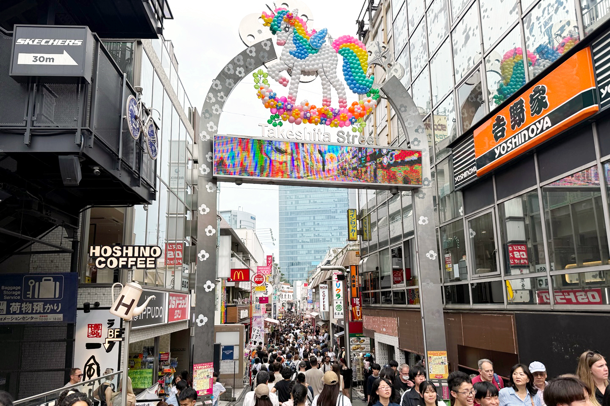

旅っていいものです
여행이란 좋은 것입니다.
疲れることもがっかりすることもあるけれど、
피곤할수도 실망할수도 있지만,
そこには何かがあります。
거기에는 무엇인가가 있습니다.
「ラオスにいったい何があるというんですか？」 -村上春樹
긴자 (銀座)
Ginza
도쿄 긴자는 일본 최고급 쇼핑 거리로, 명품 브랜드 매장과 세련된 카페, 고급 레스토랑이 즐비합니다.
전통적인 화과자점과 현대적인 건축물이 조화를 이루며, 예술 갤러리와 극장도 많아 다양한 문화 체험이 가능합니다.

시부야 (渋谷)
Shibuya
도쿄 시부야는 젊음과 활력이 넘치는 트렌디한 거리로, 세계적으로 유명한 시부야 스크램블 교차로가 있는 곳입니다.
패션, 음악, 엔터테인먼트의 중심지로 다양한 상점과 클럽, 맛집이 모여 있으며, 최신 일본 문화를 체험하기 좋은 지역입니다.

하라주쿠 (原宿)
Harajuku
개성 넘치는 패션과 스트리트 문화의 중심지로, 젊은이들의 트렌디한 스타일을 볼 수 있는 다케시타 거리로 유명합니다. 독특한 카페, 빈티지숍, 아트숍이 많으며, 근처에 메이지 신궁과 요요기 공원이 있어 자연과 문화도 함께 즐길 수 있습니다.
